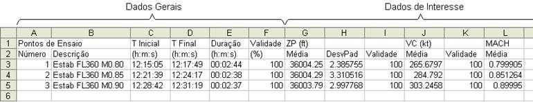
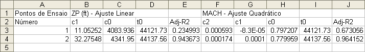
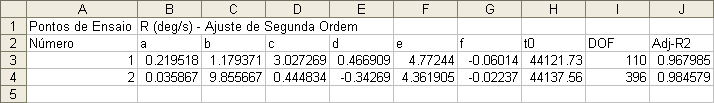
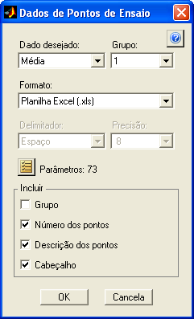
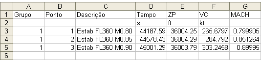
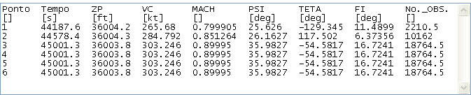
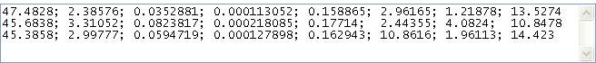

| Menu Ferramentas |
|
Após cadastrar
os pontos de ensaio
e definir os dados de interesse, os ajustes de curva e os valores de
validação
na ferramenta
de edição de pontos de ensaio, é
possível compilar os dados resultantes em planilhas, permitindo ao
usuário agilizar os
procedimentos de análise e redução de dados.
O R_DAT dispõe
de três ferramentas
de obtenção de dados dos pontos de ensaio:
Obter
Compilação de Dados dos Pontos de Ensaio
Essa ferramenta
permite obter a
compilação dos dados gerais e os dados de interesse de um grupo de
pontos de
ensaio.
Clique em
“Ferramentas ► Gerenciamento de pontos de ensaio
... ►
Obter compilação de dados” ou no
botão na
Barra de Ferramentas.
Caso haja mais
de um grupo de pontos cadastrados, o usuário
deverá indicar o grupo desejado:
Os dados gerais
dos pontos de ensaio são:
|
Dado Geral |
Descrição |
|
Descrição |
Texto com a
descrição do ponto de ensaio. |
|
Tempo Inicial |
Tempo inicial
do ponto de ensaio no formato HH:MM:SS.MS. |
|
Tempo Inicial |
Tempo final do
ponto de ensaio no formato HH:MM:SS.MS. |
|
Duração |
Duração do
ponto de ensaio no formato HH:MM:SS.MS. |
|
No. observações |
Número de
linhas da matriz DADOS contidas no ponto de ensaio (tamanho da amostra). |
|
Validade (%) |
Porcentagem
geral de observações dentro das tolerâncias, considerando todos os
parâmetros relevantes que apresentam tolerâncias cadastradas. |
Os dados de
interesse dos pontos de ensaio, relativos aos
parâmetros desejados, são:
|
Dado de
Interesse |
Descrição |
|
Média |
Valor médio do
parâmetro no intervalo do ponto de ensaio. |
|
Desvio padrão |
Desvio padrão
do parâmetro no intervalo do ponto de ensaio. |
|
Mínimo |
Valor mínimo do
parâmetro no intervalo do ponto de ensaio. |
|
Máximo |
Valor máximo do
parâmetro no intervalo do ponto de ensaio. |
|
Amplitude |
Diferença entre
os valores máximo e mínimo do parâmetro no intervalo do ponto de ensaio. |
|
Valor Inicial |
Valor da
primeira observação do parâmetro no intervalo do ponto de ensaio. |
|
Valor Final |
Valor da última
observação do parâmetro no intervalo do ponto de ensaio. |
|
Variação |
Diferença entre
os valores da última e da primeira
observações do parâmetro no intervalo do ponto de ensaio. |
|
Validade (%) |
Porcentagem de
observações do parâmetro dentro das tolerâncias cadastradas, no
intervalo do ponto de ensaio. |
|
Constante de
tempo |
Constante de
tempo de um ajuste de resposta de 1ª ordem do parâmetro no intervalo do
ponto de ensaio. |
|
Amortecimento |
Amortecimento
de um ajuste de resposta de 2ª ordem do parâmetro no intervalo do ponto
de ensaio. |
|
Frequência
natural |
Frequência
natural de um ajuste de resposta de 2ª ordem do parâmetro no intervalo
do ponto de ensaio. |
|
Derivada média |
Coeficiente angular de um ajuste de 1º grau do parâmetro no intervalo do ponto de ensaio. |
Os dados
selecionados são obtidos para todos os pontos de
ensaio do grupo selecionado e apresentados em uma planilha Excel.
As primeiras
colunas apresentam os dados gerais da seguinte
forma:
- Primeira coluna:
Numeração dos pontos de ensaio do grupo selecionado (sempre
apresentada);
- Segunda coluna:
Descrição dos pontos de ensaio (opcional);
- Demais colunas:
Dados gerais selecionados pelo usuário (opcionais);
- Primeira linha:
Nomes dos dados gerais;
- Segunda linha:
Unidades dos dados gerais.
As demais
colunas apresentam os dados de interesse da
seguinte forma:
- Demais colunas:
Dados de interesse dos parâmetros selecionados pelo usuário;
- Primeira linha:
Nomes e unidades dos parâmetros desejados;
- Segunda linha:
Tipo dos dados de interesse.
Exemplo:

O usuário pode
usar a planilha apresentada como pasta de
trabalho ou como fonte de dados para programas de redução de dados.
|
Nota: O programa MS
Excel é limitado a 65.536 linhas e 256 colunas por planilha. Caso o
número de pontos (mais duas linhas de cabeçalho) ou o número de colunas
seja superior ao limite do Excel, a compilação não será possível. |
Obtenção
de Dados dos Ajustes de Curvas dos
Pontos de Ensaio
Essa ferramenta
permite obter os
dados dos ajustes de curva de um grupo de pontos de ensaio.
Clique em
“Ferramentas ► Gerenciamento de pontos de ensaio
... ►
Obter dados dos ajustes de curva” ou no
botão na
Barra de Ferramentas.
Caso haja mais
de um grupo de pontos cadastrados, o usuário
deverá indicar o grupo desejado:
Os dados dos
ajustes dos pontos de ensaio são:
|
Dado |
Observação |
|
Coeficientes de
ajuste polinomial |
Coeficientes
dos polinômios de ajuste, do termo de maior grau para o de menor grau. |
|
Coeficientes da
curva de resposta dinâmica |
Coeficientes
das curvas de ajuste de resposta dinâmica de 1ª ou 2ª ordem, conforme função
de
ajuste de curva. |
|
Offset da abscissa |
Valor inicial
da abscissa, subtraído para evitar erros numéricos quando os valores da
abscissa são elevados. |
|
Graus de
liberdade |
Diferença entre
o número de pontos da amostra e o número de coeficientes da equação
ajustada. |
|
Norma dos
resíduos |
Representa uma
medida da aderência do ajuste, onde valores menores indicam ajustes
melhores. |
|
SSE “Sum
of squares due to error” |
Mede o desvio
da resposta com relação aos valores ajustados. Um valor próximo de zero
indica um melhor ajuste. |
|
Erro
RMS “Root
mean squared error” |
Fornece a média
quadrática dos erros. Um valor próximo de zero indica um melhor ajuste. |
|
Desvio padrão |
Fornece o desvio padrão dos erros. Um valor próximo de zero indica um melhor ajuste. |
|
R²
ajustado |
Coeficiente de
múltipla determinação ajustado pelos graus de liberdade. Representa uma
medida normalizada da qualidade do ajuste, variando de |
Para mais
informações sobre as estatísticas do ajuste,
clique aqui.
Os dados de
ajustes de curva são obtidos para todos os
pontos de ensaio do grupo selecionado e apresentados em uma planilha
Excel da
seguinte forma.
- Primeira coluna:
Numeração dos pontos de ensaio do grupo selecionado;
- Demais colunas:
Coeficientes das curvas ajustadas, offset
da abscissa e dados estatísticos desejados;
- Primeira linha:
Nomes, unidades dos parâmetros desejados e tipo de ajuste;
- Segunda linha:
Nomenclatura dos coeficientes das curvas e dos dados desejados.
Exemplos:


O usuário pode
usar a planilha apresentada como pasta de
trabalho ou como fonte de dados para programas de redução de dados.
|
Nota: O programa MS
Excel é limitado a 65.536 linhas e 256 colunas por planilha. Caso o
número de pontos (mais duas linhas de cabeçalho) ou o número de colunas
seja superior ao limite do Excel, a obtenção dos dados dos ajustes não
será possível. |
Obtenção
de Tabela de Dados dos Pontos de Ensaio
Essa ferramenta
permite obter uma
tabela de dados dos pontos de ensaio, para todos ou parte dos
parâmetros. O tipo
de dado
pode ser escolhido pelo usuário.
Clique em
“Ferramentas ► Gerenciamento de pontos de ensaio
... ►
Obter tabela de dados” ou no botão na
Barra de Ferramentas.

No campo “Dado
desejado”, selecione o tipo de dado que
deseja obter. Os dados disponíveis são:
|
Dado de
Interesse |
Descrição |
|
Média |
Valor médio do
parâmetro no intervalo do ponto de ensaio. |
|
Desvio padrão |
Desvio padrão
do parâmetro no intervalo do ponto de ensaio. |
|
Valor mínimo |
Valor mínimo do
parâmetro no intervalo do ponto de ensaio. |
|
Valor máximo |
Valor máximo do
parâmetro no intervalo do ponto de ensaio. |
|
Amplitude |
Diferença entre
os valores máximo e mínimo do parâmetro no intervalo do ponto de ensaio. |
|
Valor Inicial |
Valor da
primeira observação do parâmetro no intervalo do ponto de ensaio. |
|
Valor Final |
Valor da última
observação do parâmetro no intervalo do ponto de ensaio. |
|
Variação |
Diferença entre
os valores da última e da primeira
observações do parâmetro no intervalo do ponto de ensaio. |
|
Número de NaNs |
Número de
observações inválidas (“NaN”) do parâmetro
no intervalo do ponto de ensaio. |
|
Derivada média |
Coeficiente
angular de um ajuste de 1º grau do parâmetro no intervalo do ponto de
ensaio. |
|
Nota: As unidades
dos dados “Número de NaNs” (adimensional)
e “Derivada média” (× 1/s) não
são as mesmas dos parâmetros originais, porém os nomes das unidades
originais não serão alterados. |
No campo
“Grupo”, selecione o grupo de pontos de ensaio para
o qual deseja obter os dados. A opção “Todos” inclui todos os grupos.
No campo
“Formato”, selecione o formato do arquivo que
deseja criar. As opções são:
|
Formato |
Descrição |
|
Planilha Excel (.xls) |
Planilha do
Microsoft Excel. |
|
Arquivo de
texto (.txt) |
Arquivo de
texto ASCII com cabeçalho. |
|
Arquivo de
texto (.dat) |
Arquivo de
texto ASCII apenas com valores numéricos. |
|
Arquivo MATLAB (.mat) |
Arquivo de
dados do MATLAB. |
Caso o formato
selecionado seja “Arquivo de texto”, indique
o caractere delimitador e o número de algarismos significativos nos
campos
“Delimitador” e “Precisão”. As opções são:
|
Delimitador |
Espaço,
Tabulação, Vírgula, Ponto-e-vírgula |
|
Precisão |
Zero a 16
algarismos |
|
Nota: Caso existam,
nos nomes de parâmetros, unidades, grupos ou descrições, ocorrências do
caractere delimitador escolhido, os mesmos serão convertidos em
sublinhado (“_”) para evitar que sejam confundidos com os delimitadores. |
|
Opção |
Descrição |
|
Grupo |
Inclui uma
coluna com o grupo a que pertence o ponto de ensaio. |
|
Número dos
pontos |
Inclui uma
coluna com o número dos pontos. |
|
Descrição dos
pontos |
Inclui uma
coluna com a descrição dos pontos. |
|
Cabeçalho |
Inclui uma
linha de cabeçalho com os nomes dos parâmetros e uma linhas com as
unidades. |
|
Nota: Alguns
formatos não permitem a inclusão de certos dados. Nesses casos, os
campos ficarão desabilitados. |
Ao clicar “OK”,
os dados selecionados são obtidos para todos
os pontos de ensaio e apresentados no formato escolhido.
Exemplos:
Médias

|
Nota: O programa MS
Excel é limitado a 65.536 linhas e 256 colunas por planilha. Caso o
número de pontos (mais as linhas de cabeçalho) ou o número de colunas
seja superior ao limite do Excel, a obtenção de dados nesse formato não
será possível. |
Médias em
formato texto (.txt) com numeração, delimitador
“espaço”, 6 algarismos significativos
e cabeçalho:

Desvios padrão
em formato texto numérico (.dat) com delimitador
“ponto-e-vírgula” e 6 algarismos
significativos:

O arquivo de
dados do MATLAB (.mat) é salvo seguindo o padrão
de armazenamento de
dados adotado pelo IPEV, ou seja, uma matriz numérica “DADOS”
contendo os
dados obtidos e uma matriz de texto “PARAM” com os nomes dos
parâmetros. É
possível abrir esse arquivo normalmente no R_DAT.
O usuário pode
usar o arquivo apresentado como arquivo de
trabalho ou como fonte de dados para programas de redução de dados.
| |
Visualização
dos ajustes de curva |
Gerenciamento
de eventos |
|